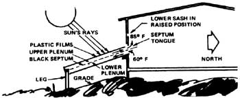

Here are a few more of THE Mother Earth News (restricted) syndicated features which have appeared in 100+ newspapers over the past three and a half years.
Some working mothers in California have come up with an idea that [1] gives them extra leisure time, [2] saves money on their food bills, and [3] cuts the energy requirements of their households. They've organized a dinner-cooking co-op and it works like this: Once every week, each woman cooks enough dinner for all seven participating families. By purchasing in larger quantities for that one meal, she usually gets a pretty good buy on meat, vegetables, etc., on a per-serving basis. At a specified time, a member from each of the other six households stops by with a container and carries off the portion of the meal prepared for his or her family. That's it . . . except for the fact that the first lady doesn't have to worry about preparing dinner again for a whole week!
Despite rosy projections by the "expects", leasure bet that heating oil, electricity, wood, and coal (all of which jumped sharply in price last winter) will cost more than ever this coming fall. Figure on spending more money to keep your house warm, then, unless you switch completely or in part-to a source of "alternative" energy . . . such as sunshine.
That's not as farfetched as it may sound. William A. Shurctiff-of Cambridge, Massachusetts-for example, says that the simple solar heater shown here can be built for about $70.00 and installed quite easily in any window on the south side of a building. Incredibly enough, Shurcliff claims the unit will deliver an average of 7,000 British thermal units of heat per hour (or 35,000 Btu pet day) in the month of January in Massachusetts.
To put the heater into operation, you simply open the lower sash of the window and puff the collector's septumtongue one foot into the room. Cold (60° F) air in the house then travels downward (south) along the lower plenum, around the foot of the black septum, back upward along the sunlit upper plenum, and (at a temperature of 85° F) reenters the room. The sash is closed at night.
This supplemental heater has some nice "fad-safe" features that keep it from sucking warmth out of your house if you forget to close its window on heavily overcast days or in the evening: [1] even on gray days, the sky itself delivers some radiation to the unit, [2] the collector is insulated on all sides so that it retains best, and [3] if the air in the collector in cooled, it merely becomes more dense and sinks to the unit's bottom . . . instead of flowing back into the house.
Of course this supplemental heater is just that-supplemental-and, on an average winter day, will supply only about 15% of a residence's heating needs. But that's not bad for a $70.00 unit that you can haul home on top of your car and assemble with simple hand tools.
What with the new latex paints and all these days, hardly anyone uses-or even remembers how to make-white-wash. Which is kind of foolish. Because, when it comes to sheer ease of application and extreme economy, I don't believe there's a paint on the modem market that can compete with whitewash. If you'd like to test that theory, here's a formula recommended by the United States Department of Agriculture: Soak 50 pounds of hydrated (slaked) lime in 6 gallons of water until you have a paste. If you can't get slaked lime, put 25 pounds of quicklime into 10 gallons of boiling water, cover the mixture and let it set for four days or longer. Either method will yield about eight gallons of lime paste.
Next dissolve 6 pounds of salt in 3 gallons of boiling water, let the solution cool and add it to the 8 gallon batch of paste. Then stir in 3 pounds of white portland cement. That's it. You're ready to paint!
Whitewash applies most smoothly to a slightly damp wall . . . and if you want to do a really good job on a surface that's been coated before, wash off the old layer with hot water and vinegar or a weak solution of hydrochloric acid. You can then spray on your low-cost paint substitute with a gun (after straining the mixture through three thicknesses of cheesecloth) . . . or, in the spirit of Tom Sawyer, just slap it right on with a brush. I prefer the second form of application.
|
|
 |
|